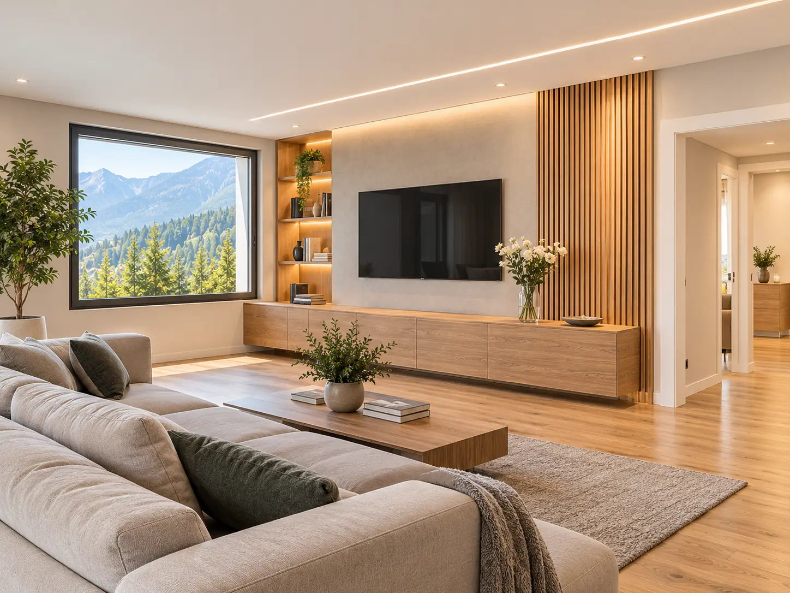
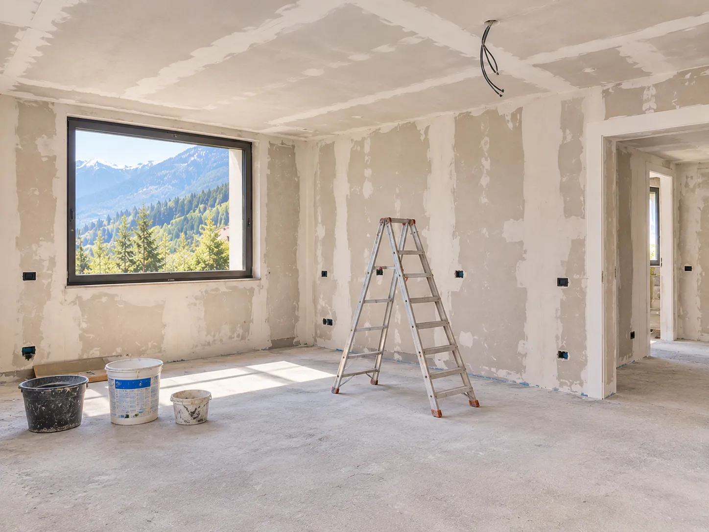
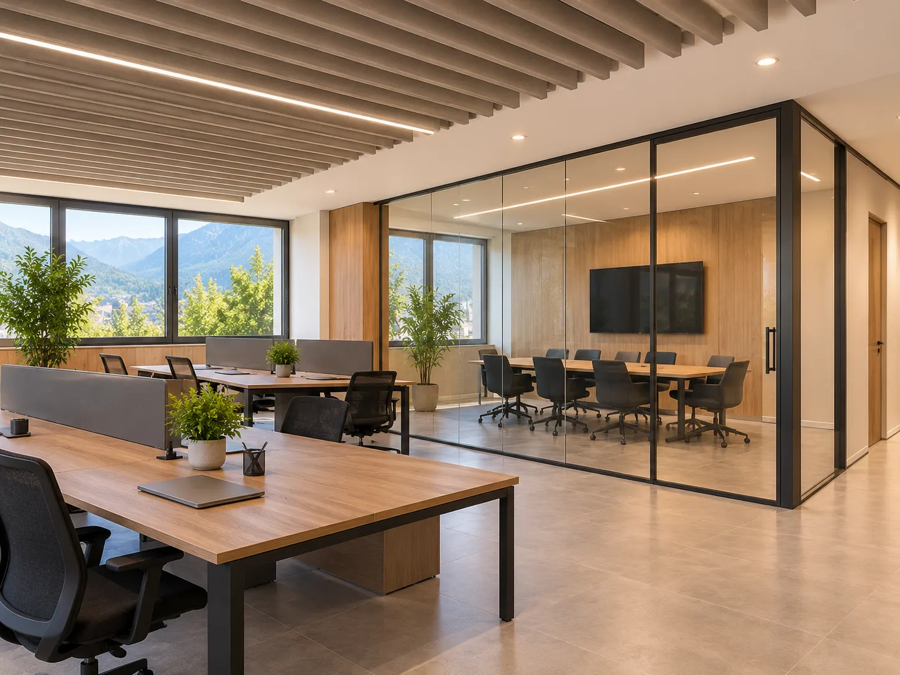
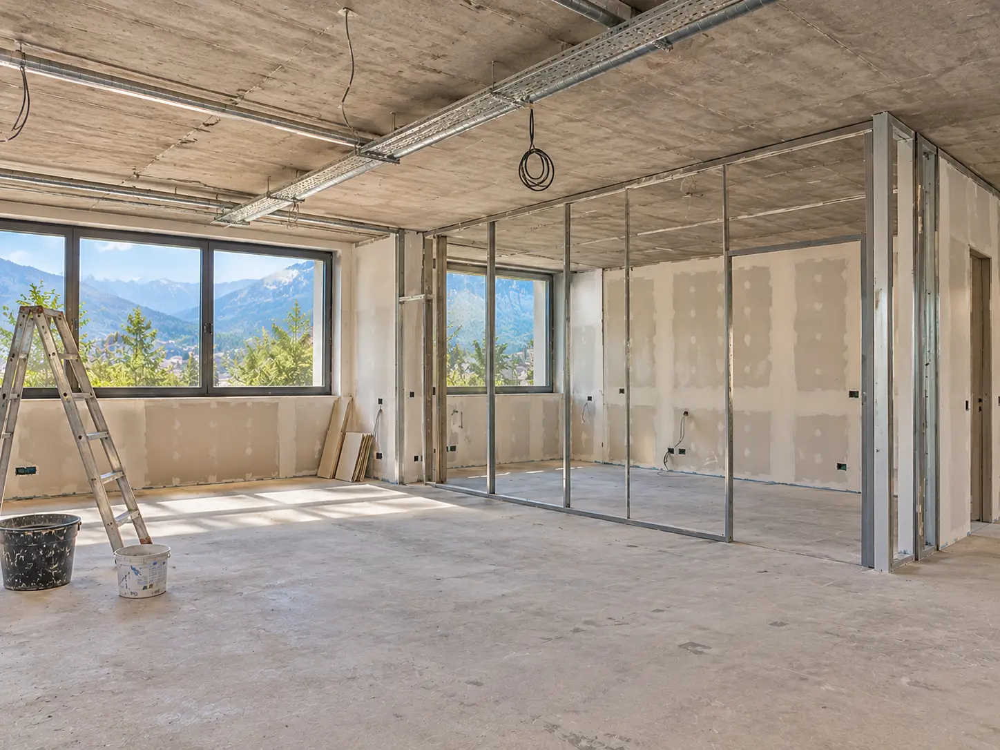
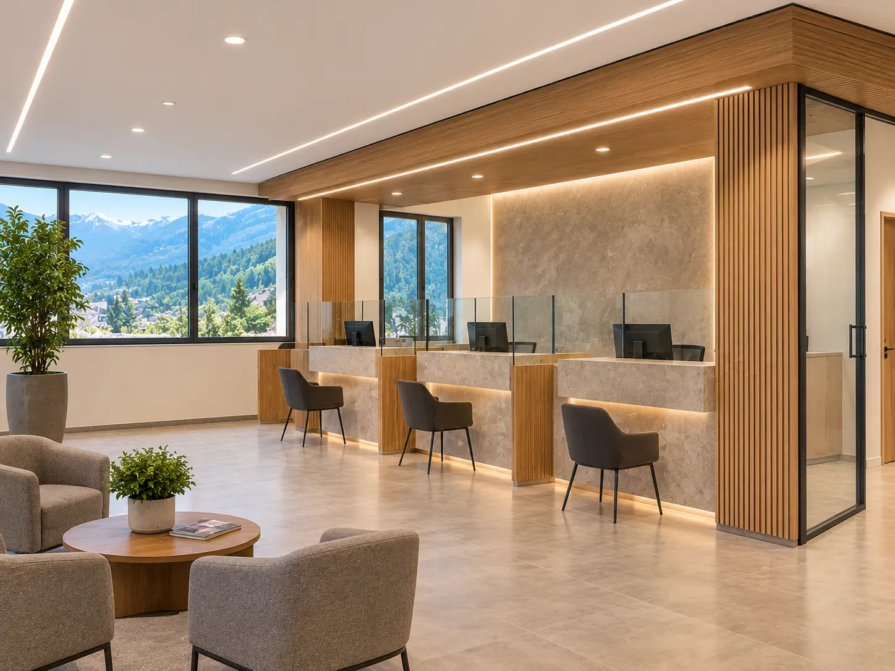
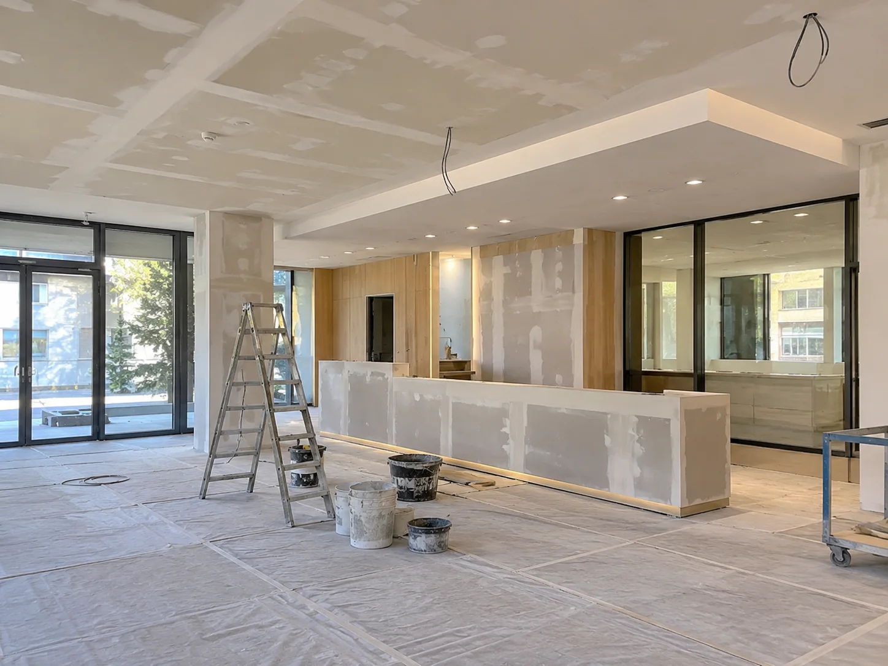
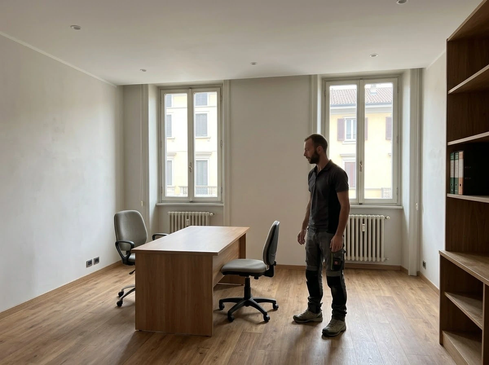
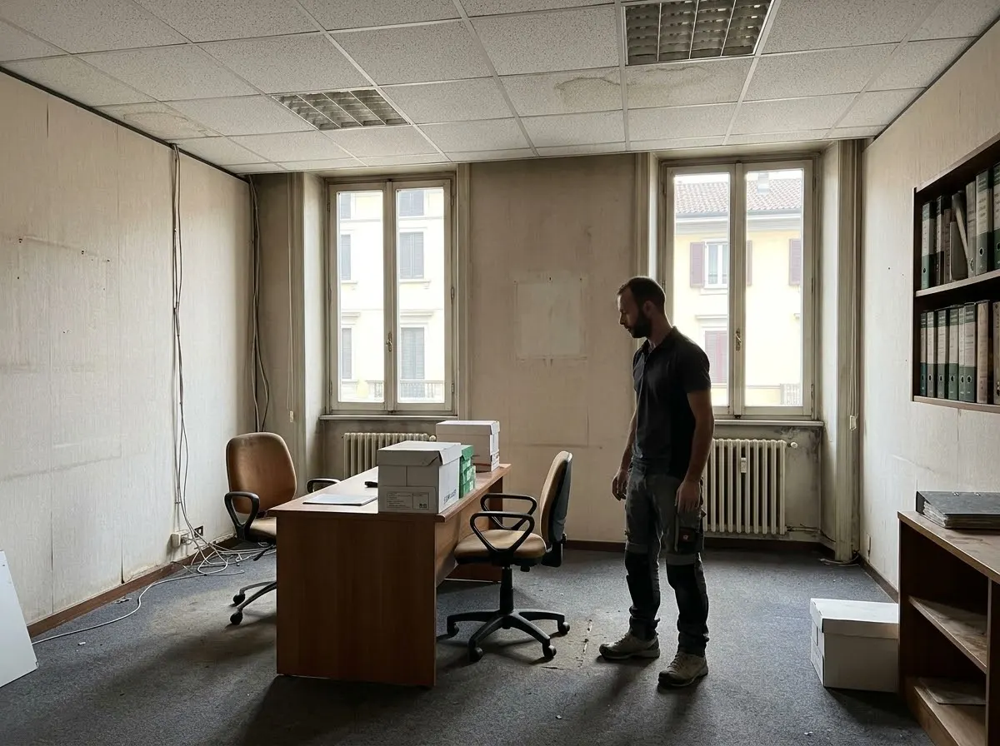

Appartamento di rappresentanza


- Intervento
- Ristrutturazione completa, bagni e illuminazione
- Durata
- 10 settimane
Stessa inquadratura prima e dopo. Trascina il cursore per confrontare.








Prenota un sopralluogo: valutiamo l'intervento e ti proponiamo un preventivo su misura, senza impegno.
Richiedi un sopralluogo